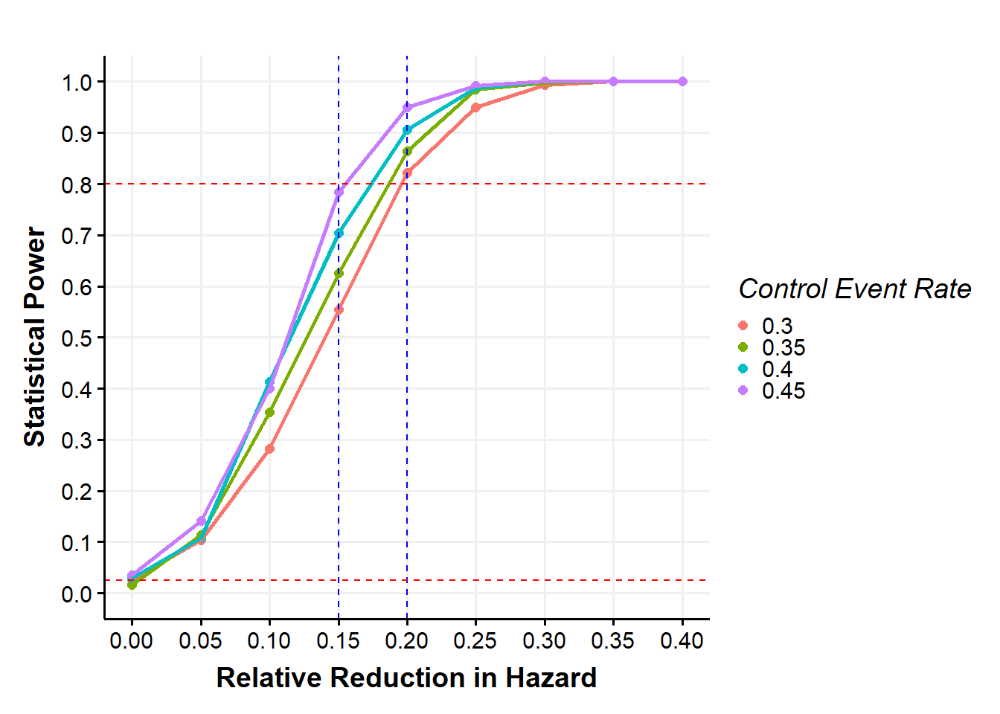

library(tidyverse)
# Source the files for this project
source( "SimulateArrivalTimes.R" )
source( "Randomizer.R" )
source( "SimulatePatientOutcome.R" )
source( "AnalysisMethods.R" )
source( "Functions.R" )
source( "SimulateTrial.R" )
source( "ThemeGGplot.R" )Simulation for Bayesian Adaptive Design: Time-to-event Endpoint I
1 Introduction
This example illustrates a fixed sample design within the Bayesian framework. I will introduce the adaptive design for this problem in Part II.
Hypothetical example. Suppose that an investigator is planning a trial to study a new drug that can potentially prevent infection- and cardiovascular-related hospitalization and death in survivors of hospitalization from a severe infection after their hospital discharge.
Patients will be randomized to either an experimental drug arm \((E)\) or standard-of-care \((S)\). The primary objective is to compare the treatment effect on patients randomized to \((E)\) or \((S)\). The primary outcome is the time-to-first occurrence of composite of infection- and cardiovascular-related hospitalization, or death, up to 1 year. The trial is planned to recruit patients for 3 years with a maximum of 1 year follow-up. The primary analysis will test the following hypotheses:
\[ H_0: HR_{E/S} = 1 \, \, \, vs \, \, \, H_a: HR_{E/S} < 1,\]
where, \(HR_{E/S}\) is the hazard ratio of \((E)\) relative to \((S)\).
Assumptions
- 1:1 randomization
- Uniform recruitment
- Expected control event rate (CER) is assumed to \(35\%\) during the 1-year observation period
- Exponentially distributed time to event
- Minimal clinically important difference is assumed to be between \(15% - 20\%\) reduction in relative hazard
- Operating characteristics (OCs) are summarized for \(HR = 0.80\), which is the expected treatment effect. However, this example can be repurposed to evaluate OCs for any HR
- \(80\%\) statistical power
2 Method
2.1 Statistical Formulation
Consider a two-arm parallel randomized controlled trial with time-to-event endpoint. Let \(Y_i\) be the time to event for patient \(i\), for \(i = 1, \ldots, N\). Let the treatment group for patient \(i\) be \(g_i\), where \(g = 1\) refers to the \((S)\) and \(g = 2\) refers to the \((E)\).
For ease of computation and explanation, we assume an exponential time-to-event model, \[ f(t) = \lambda_g \exp (-\lambda_gt), \, \, \, \, g = 1,2\] and independent prior distributions for the two treatment hazard rates, \[ \lambda_g \sim \Gamma (\alpha , \beta ), \, \, \, \, g = 1,2 \] These prior distributions are equivalent to assuming \(\alpha\) event in \(\beta\) years/weeks/days (depending on the unit of time in the model).
The posterior distributions for the two treatment hazard rates given the data can be written as: \[\lambda_g | X_g, E_g \sim \Gamma (\alpha + X_g , \beta + E_g ), \, \, \, \, g = 1,2 \] where, \(X_g\) and \(E_g\) are number of events and exposure time, respectively.
The posterior distribution of the parameters can be estimated using different computational techniques. In this example, we used the Markov Chain Monte Carlo (MCMC) method.
See (Berry et al. 2010), (Kruschke 2014) for Bayesian computational methods.
2.2 Adaptive Design
2.2.1 Timing of Analyses
This example is a fixed sample trial. Hence, no interim analysis is specified.
2.2.2 Trial Conclusion
For this example, the trial will conclude that \(E\) is superior to \(S\) if the posterior probability of the hazard ratio exceeds \(0.975\) (i.e., \(Pr(HR_{E/S} < 1 | data) > 0.975\)).
2.3 Simulation
2.3.1 Task (see, (Wathen 2019))
Simulate the arrival times for all patients
Randomize each patient to a treatment
Use the treatment to simulate patient outcomes.
Analyze the data to compute \(Pr(HR_{E/S} < 1 | data)\) using all patient data.
Make a decision at the end of the study
2.3.2 Operating Characteristics
Operating characteristics, including false-positive, power, average number of events and sample size are calculated based on \(500\) simulation iterations per scenario
3 Computation
Programming convention including naming of functions, in this example is an adaptation from (Wathen 2019).
See project folder for accompanying R scripts.
3.1 Simple example to understand the code. We would explore one scenario
########################## Setup Design Parameters #############################
nQtyReps <- 500 # The number of virtual trials to simulate
nMaxQtyOfPats <- 2500 # The maximum number of patients
dTargetHazardRatio <- 0.80 # Expected treatment effect
dRelativeReduction <- 1 - dTargetHazardRatio # Target relative reduction in hazard ratio
dTrueEventS <- 0.35 # Control event rate for a year
dHazardRateS <- -log(1 - dTrueEventS) / 1 # Control hazard rate per year
dHazardRateE <- dTargetHazardRatio * dHazardRateS # Exp hazard rate per year
dTrueEventE <- 1 - (exp(-dHazardRateE)) # Exp event rate for a year
dAbsoluteRed <- dTrueEventS - dTrueEventE # Absolute reduction
dTestHazardRatio <- 1 # Hypothesized HR
dRecruitTime <- 36 # Recruitment duration
dFollowUp <- 12 # Follow-up duration
dQtyPatsPerMonth <- nMaxQtyOfPats / dRecruitTime # Number of patients that will be enrolled each month
# Specify the Priors: lambda_S ~ Gamma( 1, 0.08 ); lambda_E ~ Gamma( 1, 0.08 )
dPriorAS <- 1
dPriorBS <- 0.08
dPriorAE <- 1
dPriorBE <- 0.08
# Decision criteria At the end of the study E will be selected if
# Select treatment E if Pr( HR < 1 | data ) > dPU
# Select treatment S if Pr( HR < 1 | data ) < dPL
dPU <- 0.975
dPL <- 0.025
# First: Simulate a single trial to understand the outputs and the parameters before launching a loop with many virtual trial
lSimulatedTrial <- SimulateSingleTrial(nMaxQtyOfPats,
dQtyPatsPerMonth,
dPriorAS,
dPriorBS,
dPriorAE,
dPriorBE,
dPU,
dPL,
dHazardRateS,
dHazardRateE,
dFollowUp,
dTestHazardRatio)
# Results variables
vResults <- numeric()
vHazardResults <- numeric()
vCurrent <- numeric()
mQtyPats <- matrix( NA, nrow = nQtyReps , ncol = 2)
mQtyEvents <- matrix( NA, nrow = nQtyReps , ncol = 2)
# Looping over many virtual trial #####
for( i in 1:nQtyReps ) {
lSimulatedTrial <- SimulateSingleTrial(nMaxQtyOfPats,
dQtyPatsPerMonth,
dPriorAS,
dPriorBS,
dPriorAE,
dPriorBE,
dPU,
dPL,
dHazardRateS,
dHazardRateE,
dFollowUp,
dTestHazardRatio)
vResults[ i ] <- lSimulatedTrial$nDecision
vHazardResults[ i ] <- lSimulatedTrial$dEstimatedHazardRatio
mQtyPats[ i, ] <- lSimulatedTrial$vQtyPats
mQtyEvents[ i, ] <- lSimulatedTrial$vQtyEvents
vCurrent [ i ] <- lSimulatedTrial$dCurrentTime
}
# Print the Operating Characteristics #####
ProbSelectNone <- sum( vResults == 1) / nQtyReps
ProbSelectS <- sum( vResults == 2) / nQtyReps
ProbSelectE <- sum( vResults == 3) / nQtyReps
print( paste( "The probability that the trial will select no treatment arm is ", ProbSelectNone))[1] "The probability that the trial will select no treatment arm is 0.118"print( paste( "The probability that the trial will select the S arm is ", ProbSelectS))[1] "The probability that the trial will select the S arm is 0"print( paste( "The probability that the trial will select the E arm is ", ProbSelectE))[1] "The probability that the trial will select the E arm is 0.882"dAveCurrentTime <- round(mean( vCurrent ), 2)
print( paste("The average time of analysis is ", dAveCurrentTime))[1] "The average time of analysis is 48"vAveQtyPats <- apply( mQtyPats, 2, mean)
print( paste("The average number of patient on the S arm is ", vAveQtyPats[1]))[1] "The average number of patient on the S arm is 1251.002"print( paste("The average number of patient on the E arm is ", vAveQtyPats[2]))[1] "The average number of patient on the E arm is 1248.998"vAveQtyEvents <- apply( mQtyEvents, 2, mean)
print( paste("The average number of event is ", vAveQtyEvents[2]))[1] "The average number of event is 802.488"3.2 Explore more than one scenario
########################## Setup Design Parameters #############################
nQtyReps <- 500 # The number of virtual trials to simulate
nMaxQtyOfPats <- 2500 # The maximum number of patients
dTargetHazardRatio <- seq(0.6, 1, 0.05) # Treatment effects
dRelativeReduction <- 1 - dTargetHazardRatio # Target relative reduction in hazard ratio
dTrueEventS <- c( 0.30, 0.35, 0.40, 0.45 ) # Control event rate for a year
dHazardRateS <- -log(1 - dTrueEventS) / 1 # Control hazard rate per year
dHazardRateE <- data.frame((matrix(dHazardRateS,length(dTrueEventS),1) %*% matrix(dTargetHazardRatio,1,length(dTargetHazardRatio))))
colnames(dHazardRateE) <- c(paste("RelReduction",sep="",dRelativeReduction))
dTrueEventE <- 1 - (exp(-dHazardRateE)) # Exp event rate for a year
dfdAbsoluteRed <- bind_cols(crossing(dTargetHazardRatio, dTrueEventS),dTrueEventE = c(unlist(dTrueEventE))) %>%
mutate(AbsoluteRed = round((dTrueEventS - dTrueEventE) * 100, 1))
dTestHazardRatio <- 1 # Hypothesized HR
dRecruitTime <- 36 # Recruitment duration
dFollowUp <- 12 # Follow-up duration
dQtyPatsPerMonth <- nMaxQtyOfPats / dRecruitTime # Number of patients that will be enrolled each month
# Specify the Priors: lambda_S ~ Gamma( 1, 0.08 ); lambda_E ~ Gamma( 1, 0.08 )
dPriorAS <- 1
dPriorBS <- 0.08
dPriorAE <- 1
dPriorBE <- 0.08
# Decision criteria At the end of the study E will be selected if
# Select treatment E if Pr( HR < 1 | data ) > dPU
# Select treatment S if Pr( HR < 1 | data ) < dPL
dPU <- 0.975
dPL <- 0.025
lDesign <- list()
for(i in 1:length(dTargetHazardRatio)){
lDesign[[i]] <- nesting(dTrueEventS, dTrueEventE[,i], dHazardRateS,dHazardRateE[,i])
}
dHazardRate <- bind_rows (lDesign[[1]],
lDesign[[2]],
lDesign[[3]],
lDesign[[4]],
lDesign[[5]],
lDesign[[6]],
lDesign[[7]],
lDesign[[8]],
lDesign[[9]])
colnames(dHazardRate) <- c("TrueEventS","TrueEventE","HazardRateS", "HazardRateE")
dHazardRate$TargetHazardRatio <- dHazardRate$HazardRateE / dHazardRate$HazardRateS
dHazardRate$RelativeReduction <- 1 - dHazardRate$TargetHazardRatio
dfModels <- crossing(dHazardRate,
TestHazardRatio = dTestHazardRatio,
PriorAS = dPriorAS,
PriorBS = dPriorBS,
PriorAE = dPriorAE,
PriorBE = dPriorBE,
dPU = dPU,
dPL = dPL,
FollowUp = dFollowUp,
RecruitTime = dRecruitTime,
QtyPatsPerMonth = dQtyPatsPerMonth,
MaxQtyOfPats = nMaxQtyOfPats ) %>%
rowid_to_column( "ModelID")
# Results variables
mResults <- matrix( NA, ncol = nrow(dfModels), nrow = nQtyReps)
mHazardResults <- matrix( NA, ncol = nrow(dfModels), nrow = nQtyReps)
mCurrentTime <- matrix( NA, ncol = nrow(dfModels), nrow = nQtyReps)
aQtyPats <- array( NA, c(nrow = nQtyReps,2,nrow(dfModels)))
aQtyEvents <- array( NA, c(nrow = nQtyReps,2,nrow(dfModels)))
##################### Start Simulation ###############################
for( index in 1:nrow(dfModels)){
for( i in 1:nQtyReps ) {
lSimulatedTrial <- SimulateSingleTrial(nMaxQtyOfPats = dfModels$MaxQtyOfPats[index],
dQtyPatsPerMonth = dfModels$QtyPatsPerMonth[index],
dPriorAS = dfModels$PriorAS[index],
dPriorBS = dfModels$PriorBS[index],
dPriorAE = dfModels$PriorAE[index],
dPriorBE = dfModels$PriorBE[index],
dPU = dfModels$dPU[index],
dPL = dfModels$dPL[index],
dHazardRateS = dfModels$HazardRateS[index],
dHazardRateE = dfModels$HazardRateE[index],
dFollowUp = dfModels$FollowUp[index],
dTestHazardRatio = dfModels$TestHazardRatio[index])
mResults[ i , index ] <- lSimulatedTrial$nDecision
mHazardResults[ i , index ] <- lSimulatedTrial$dEstimatedHazardRatio
mCurrentTime[ i , index ] <- lSimulatedTrial$dCurrentTime
aQtyPats[ i, , index ] <- lSimulatedTrial$vQtyPats
aQtyEvents[ i, , index ] <- lSimulatedTrial$vQtyEvents
}
}
# Print the Operating Characteristics #####
dProbSelectNone <- numeric()
dProbSelectS <- numeric()
dProbSelectE <- numeric()
dAveHazardRatio <- numeric()
dCurrentTime <- numeric()
mAveQtyPats <- matrix(NA, nrow(dfModels), 2)
mAveQtyEvents <- matrix(NA, nrow(dfModels), 2)
for( index in 1:nrow(dfModels)){
dProbSelectNone[index] <- sum( mResults[,index] == 1) / nQtyReps
dProbSelectS[index] <- sum( mResults[,index] == 2) / nQtyReps
dProbSelectE[index] <- sum( mResults[,index] == 3) / nQtyReps
dAveHazardRatio[index] <- round(mean( mHazardResults[,index] ), 2)
dCurrentTime[index] <- round(mean( mCurrentTime[,index] ), 2)
mAveQtyPats[index,] <- round(apply( aQtyPats[,,index],2,mean),1)
mAveQtyEvents[index,] <- round(apply( aQtyEvents[,,index],2,mean),1)
}
SimResults <- bind_cols(TargetHazardRatio = dfModels$TargetHazardRatio,
TrueEventRateS = dfModels$TrueEventS,
TrueEventRateE = dfModels$TrueEventE,
RelativeReduction = dfModels$RelativeReduction,
AveHazardRatio = dAveHazardRatio,
CurrentTime = dCurrentTime,
ProbSelectNone = dProbSelectNone,
ProbSelectS = dProbSelectS,
ProbSelectE = dProbSelectE,
AveQtyEvents = mAveQtyEvents[,2])
AveQtyPats <- data.frame(mAveQtyPats)
colnames(AveQtyPats) <- c("AvgSampleSizeS","AvgSampleSizeE")
AveQtyPats$AvgSampleSize <- rowSums(AveQtyPats)
SimResults %>%
ggplot(aes(x = RelativeReduction, y = ProbSelectE, colour = factor(TrueEventRateS) )) +
geom_point(size = 2) + geom_line(size = 1) +
geom_vline(xintercept = c(0.20,0.15), colour = "blue",linetype = "dashed") +
geom_hline(yintercept = c(0.025,0.8), colour = "red", linetype = "dashed") +
xlab("Relative Reduction in Hazard") +
ylab("Statistical Power") +
labs(colour = "Control Event Rate") +
scale_y_continuous(breaks = seq(0, 1, by = 0.1), limits=c(0,1) ) +
scale_x_continuous(breaks = seq(0,0.4, by = 0.05), limits = c( 0.0, 0.4)) +
theme(axis.text.x = element_text(size = 13),
axis.title.x = element_text(size=13),
axis.text.y = element_text(size = 13),
axis.title.y = element_text(size=13),
strip.text = element_text( size=13),
legend.text = element_text(size=13),
legend.title = element_text(size=13)) + theme_Publication()
dfdAbsoluteRed #Absolute Reduction # A tibble: 36 × 4
dTargetHazardRatio dTrueEventS dTrueEventE AbsoluteRed
<dbl> <dbl> <dbl> <dbl>
1 0.6 0.3 0.193 10.7
2 0.6 0.35 0.228 12.2
3 0.6 0.4 0.264 13.6
4 0.6 0.45 0.301 14.9
5 0.65 0.3 0.207 9.3
6 0.65 0.35 0.244 10.6
7 0.65 0.4 0.283 11.7
8 0.65 0.45 0.322 12.8
9 0.7 0.3 0.221 7.9
10 0.7 0.35 0.260 9
# ℹ 26 more rowsRoughly speaking, with \(2500\) patients we can achieve a relative reduction of \(>= 20\%\) with \(80\%\) statistical power for all the control event rate. Hence, in the next example (i.e., adaptive example) we would aim to achieve a relative reduction of \(20\%\) with \(2500\) patients and \(35\%\) control event rate.
Check out “Simulation for Bayesian Adaptive Design: Time-to-event Endpoint II”
References
Berry, Scott M, Bradley P Carlin, J Jack Lee, and Peter Muller. 2010. Bayesian Adaptive Methods for Clinical Trials. CRC press.
Kruschke, John. 2014. “Doing Bayesian Data Analysis: A Tutorial with R, JAGS, and Stan.” Academic Press.
Wathen, J Kyle. 2019. “Simulation for Bayesian Adaptive Designs—Step-by-Step Guide for Developing the Necessary r Code.” In Bayesian Applications in Pharmaceutical Development, 267–85. Chapman; Hall/CRC.